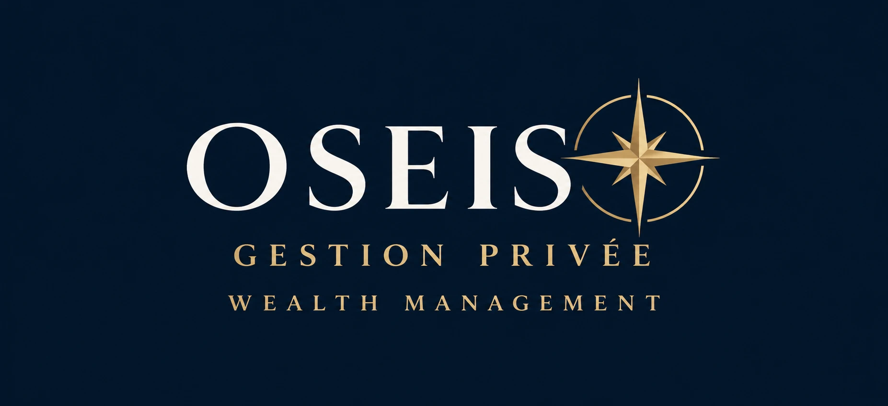

Écoute & sur‑mesure
Chaque situation est unique. Nous prenons le temps de comprendre votre histoire, vos projets et votre horizon avant de recommander quoi que ce soit.
OSEIS accompagne les familles, les dirigeants et les professions libérales dans la construction, la protection et la transmission de leur patrimoine — avec rigueur, indépendance et discrétion.

Chaque situation est unique. Nous prenons le temps de comprendre votre histoire, vos projets et votre horizon avant de recommander quoi que ce soit.
Une analyse libre de toute contrainte de produit, pour des préconisations guidées uniquement par vos intérêts et vos objectifs.
Un patrimoine se pilote dans la durée. Nous construisons avec vous une stratégie cohérente, suivie et ajustée au fil des étapes de votre vie.
Bilan, objectifs et allocation d'ensemble de vos actifs financiers, immobiliers et professionnels.
Assurance‑vie, portefeuille financier, immobilier : une sélection cohérente avec votre profil.
Anticiper la donation et la succession pour protéger vos proches et optimiser la transmission.
« Un patrimoine bien conduit est un cap : il donne de la liberté aujourd'hui et de la sérénité demain. »Franck BONIN — Fondateur d'OSEIS
Un premier rendez-vous, sans engagement, pour faire le point sur votre situation et vos priorités.